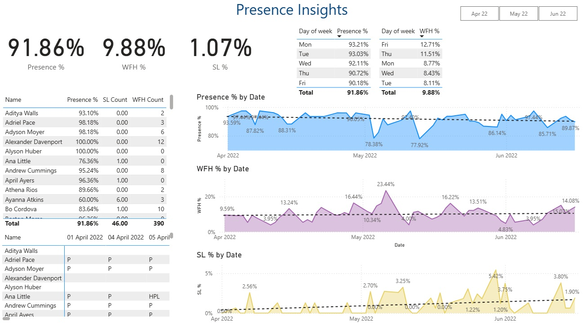

HR Attendance Data Analysis
← Back to All Projects

Project Overview
This Power BI dashboard was created to track and analyze employee presence, Work From Home (WFH), and Sick Leave (SL) patterns across the organization. It provides HR teams and managers with a consolidated view of attendance trends over time, segmented by individuals and weekdays, helping identify gaps in workforce availability and optimize work policies.
Key Findings & Insights
- Mondays and Tuesdays saw the highest physical presence; Fridays had the highest WFH rate (12.71%)
- Presence dipped notably on a few days in May, correlating with spikes in WFH
- Some employees (e.g., Ayanna Atkins, Ana Little) had significantly lower presence %, indicating a need for check-ins or support
- WFH usage peaked at 23.44% on a single day, signaling flexible working behavior